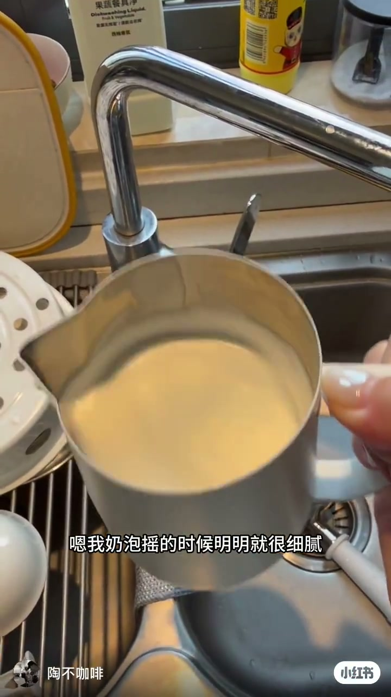
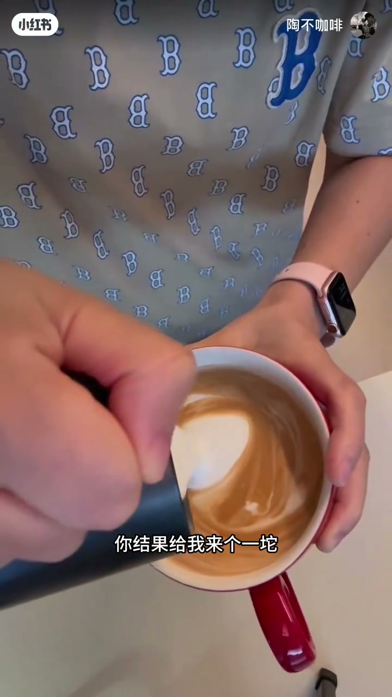
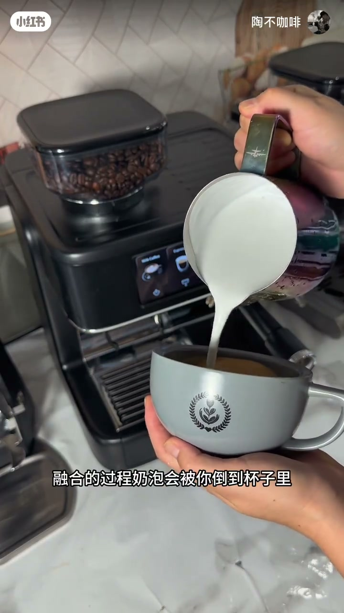
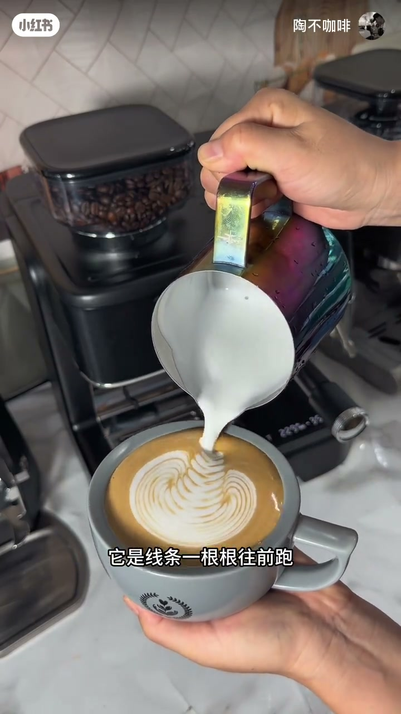
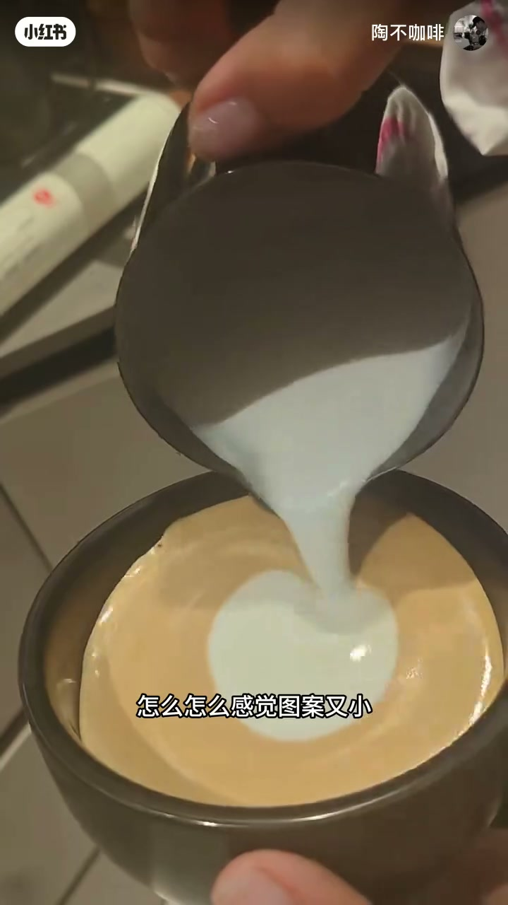
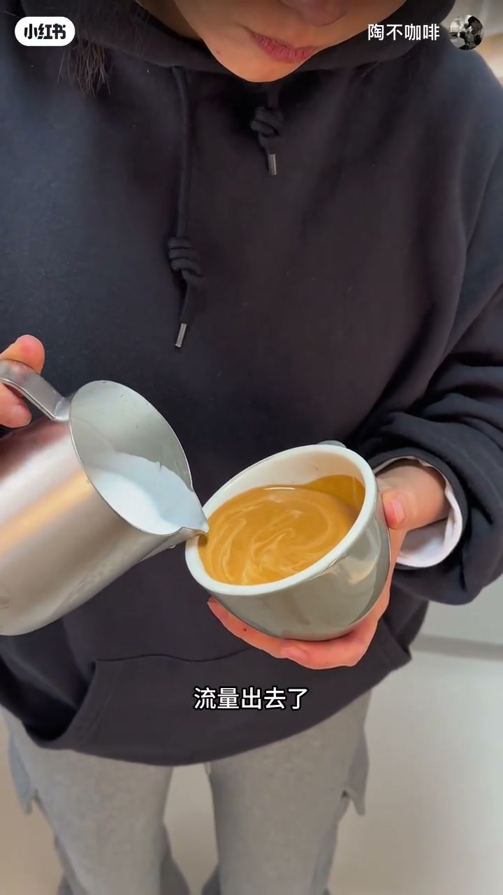
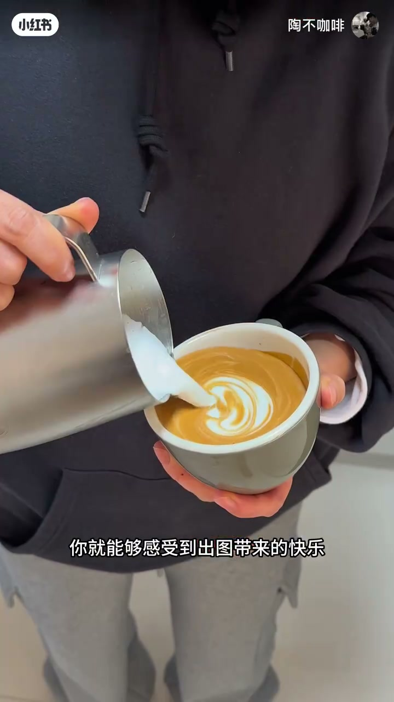

内容要点
一支 1 分 08 秒的拉花纠错视频：针对「奶泡明明很细腻，倒进咖啡里却像没打过一样、拉出来一坨一坨」的典型翻车现场，点出两个新手最容易忽略的细节——拉花前奶泡分层要先摇匀、拉花时要给足够大的流量。配着真实翻车画面讲，一句「宁大勿小」非常实用。
知识结构
奶泡摇起来很细腻，倒进咖啡却像没打过一样，表面一点奶泡都没有，拉出来一坨。
奶泡打完会分层，拉花前要先摇一下。摇匀后融合，奶泡有支撑性，压低倒奶时线条一根根往前跑，而不是一坨一坨。
有人说摇了还是没线条、图案小。关键是拉花时一定要给足够大的流量，流量够大才有推动力，奶泡才能浮在表面形成图案。宁大勿小。
宁愿先大后小，就能感受到出图带来的快乐。
拉花翻车的两个隐形杀手：①奶泡打完会分层，倒之前一定要摇匀，让奶泡有支撑性；②拉花时要给足流量，宁大勿小——流量够大才有推动力，线条才能一根根往前跑。
00:00-00:15典型的拉花翻车现场
视频用一段真实的困惑开场：「我奶泡摇的时候明明就很细腻，为什么我倒到咖啡里，它怎么感觉跟没打过一样？」咖啡表面一点奶泡都没有，「我本来信心满满要拉个漂亮的图案，你结果给我来个一坨。」
这个场景几乎每个拉花新手都经历过——奶泡看起来完美，一倒就露馅。问题到底出在哪？


00:15-00:33错误一：拉花前忘了摇奶泡
「新手其实最容易忽略的就是，奶泡打完会分层。」牛奶和奶泡静置后会逐渐分离，粗看还是细腻的，倒出来却只有热牛奶。
解决办法非常简单：「你在拉花前要摇一下，奶泡摇一下。」摇匀之后再做融合，「杯子里有奶泡有支撑性」，当你压低去倒、摆动拉花时，「你会发现拉花时的效果，线条一根根往前跑，而不是一坨一坨的了。」


00:33-01:00错误二：流量不够大
「这个时候又有朋友说了：我也摇了，但为什么我拉的时候它没有线条了？怎么感觉图案又小？」主播用一句玩笑回应：「你别腻了，你要记住了。」
答案落在流量上：「拉花时一定要给足够大的流量。流量出去了，它有足够的推动力，有足够的奶泡能浮在表面，就容易形成图案。」
口诀只有四个字：「宁大勿小。」如果太大了再收小一点——「宁愿先大后小，你就能够感受到出图带来的快乐。」



完整转录（44段）
以下文本由 Whisper medium 模型自动转录，可能存在少量识别误差，已尽可能修正。
嗯 我奶泡摇的时候明明就很细腻
为什么我倒到咖啡里
它怎么感觉跟没打过一样
咖啡表面感觉一点奶泡都没有
我本来信息满满要拉个漂亮的图案
你结果给我来个一坨
新手其实最容易忽略的就是
奶泡打完会分层
你在拉花前浓缩摇一下
奶泡摇一下
融合的过程
奶泡会被你倒到杯子里
杯子里有奶泡有支撑性
你刚压低去倒摆拉花时
你会发现拉花时的效果
它是线条一根根往前跑
而不是一坨一坨的了
这个时候又有朋友说了
我已经跟你一样
我说我也摇了
但为什么我拉的时候
它没有线条了
怎么怎么感觉图案又小
我也摆动了
但又没有线条
哎 你这个骗子
我都跟着你做了
我拉不出来
你别腻了
你要记住了
拉花时一定要给足够大的流量
流量出去了
它有足够的推动力
有足够的奶泡
它能浮在表面就容易形成图案
所以记得 宁大勿小
如果太大了再收小一点
宁愿先大后小
你就能够感受到出头带来的快乐
相信视频能够帮助到你
学会了别忘了点赞关注
如果你有咖啡机不会做
欢迎加入我的现场课
好的